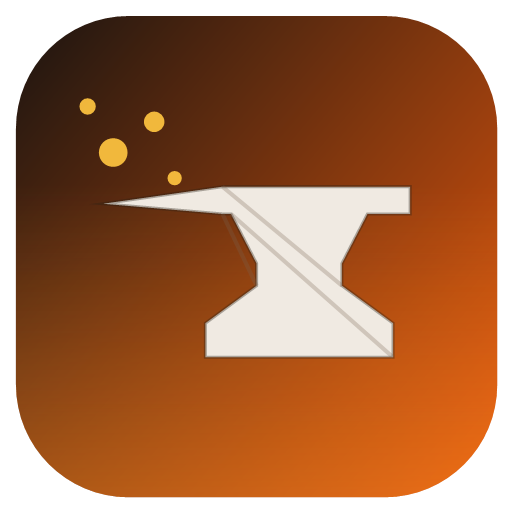
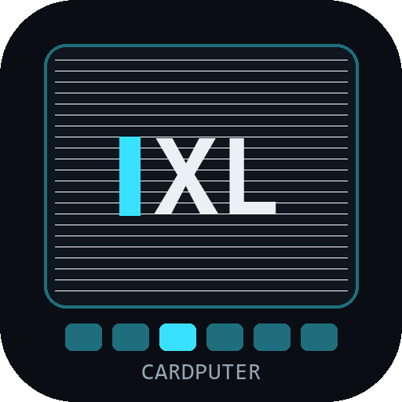
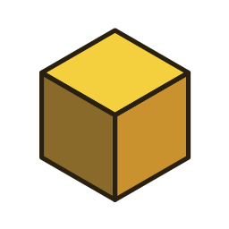

Desktop apps and ESP32 firmware — mostly VB.NET/WPF and Arduino, built for real use rather than demos.

3D scan processing: hole filling, tessellation, photo texturing, a Fusion 360-style history timeline, and a mesh-editing toolbar (lasso delete, extrude, manual rotate).

A single-file firmware "OS" for the M5Stack Cardputer-ADV: ~30 built-in apps, a CardC scripting IDE, a 3D kart racer. Flash it straight from the browser.

Low-poly 3D modeling: assemble primitives, transform them with a real object-oriented gizmo, and export to OBJ or STL.
Standalone M5StickC S3 firmware for the Żabka Triki BLE controller: phone-free dashboard, Find My, ToF rangefinder, Triki-steered arcade games.
Android app connecting to a Żabka Triki BLE controller: live IMU dashboard, shock detection, Find My, Triki-steered arcade.
A limited C-like programming language — the interpreter behind CardputerXL's on-device C LAB.
Advanced 16-step groovebox for M5Stack: 4-track drums (WAV) + 2-track synth, 2-octave keyboard, SD save system, real-time mixer.
Using the M5Stack Cardputer ADV as a mini palmtop, via the Arduino Uno Q.
A MakeCode extension for micro:bit, supporting a 44-key button matrix.